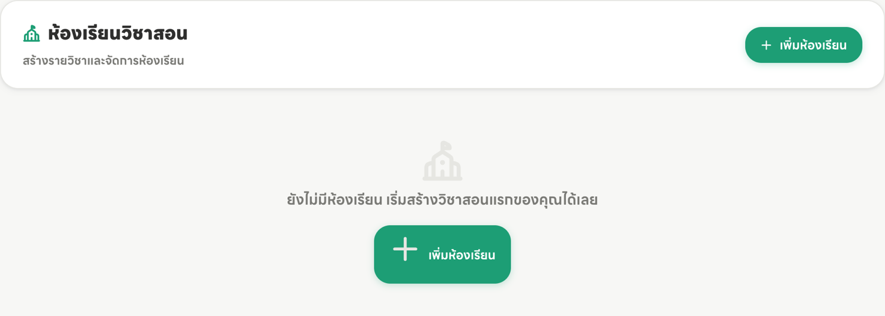
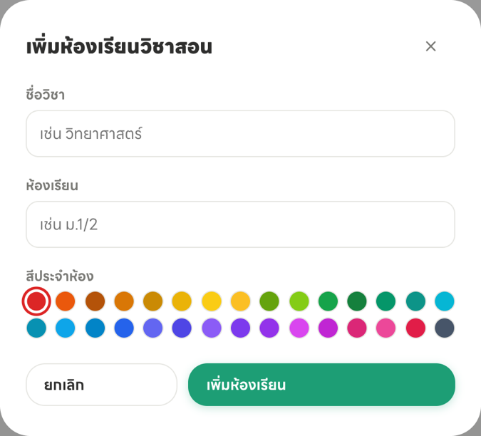
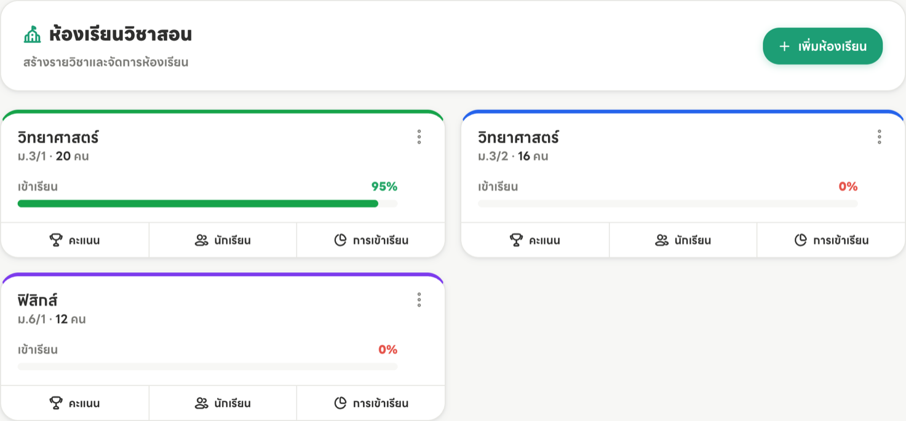
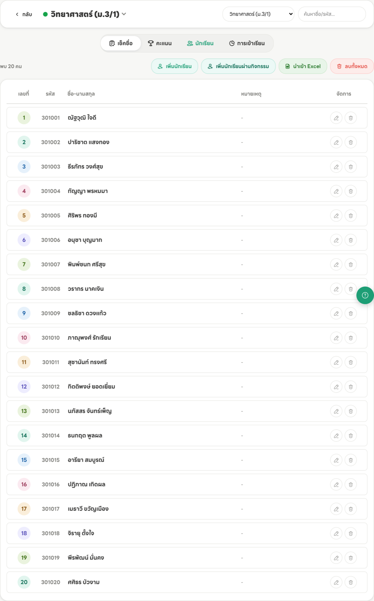

ตั้งค่าครั้งเดียวตอนเริ่มใช้งาน — สร้างห้องเรียน เพิ่มรายชื่อ และลงตารางสอน จากนั้นค่อยไปเช็กชื่อในหมวด 2
หลังเข้าสู่ระบบครั้งแรก เมนู “ห้องเรียนวิชาสอน” จะยังว่างอยู่ กดปุ่ม “เพิ่มห้องเรียน” มุมขวาบนเพื่อเริ่ม

กรอก ชื่อวิชา กับ ห้องเรียน แล้วเลือกสีประจำห้อง สีนี้จะใช้แยกห้องในตารางสอนและหน้าแรก เลือกให้ต่างกันจะดูง่ายกว่า

สร้างครบทุกห้องที่สอนแล้วจะได้หน้าตาแบบนี้ — แต่ละการ์ดบอกจำนวนนักเรียนและอัตราการเข้าเรียน พร้อมปุ่มลัดไปหน้าคะแนน นักเรียน และการเข้าเรียน

กดปุ่ม “นักเรียน” บนการ์ดห้องเรียน แล้วเพิ่มรายชื่อได้ 3 วิธี

ขั้นนี้ ข้ามได้ ถ้ายังไม่พร้อม — เช็กชื่อได้ตามปกติอยู่แล้ว แต่ถ้าลงตารางสอนไว้ หน้าแรกจะทำงานให้คุณเยอะขึ้นมาก คือบอกได้ว่าวันนี้มีคาบอะไร เวลาไหน และคาบไหนยังไม่ได้เช็กชื่อ
เข้าเมนู “ตารางสอนประจำสัปดาห์” แล้วแตะช่องในตารางเพื่อเลือกวิชาและห้องที่สอนคาบนั้น
มีห้องเรียน มีรายชื่อนักเรียน และมีตารางสอนแล้ว เท่านี้ก็พร้อมใช้งานจริงในคาบถัดไป
ส่วนคะแนนและ ปพ.5 ค่อยมาตั้งค่าตอนใกล้ต้องส่งคะแนนก็ได้ ไม่ต้องรีบทำตอนนี้